전파전자통신기사 (2019-10-12 기출문제)
1과목: 디지털전자회로
1. 다음 평활회로에서 직류출력전압은 약 얼마인가?
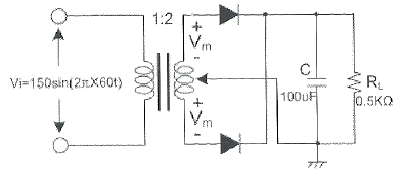
- 48[V]
- 72[V]
- 138[V]
- 192[V]
(정답률: 50%)

2. 제너 다이오드의 양단 전압이 120[V], 제너 다이오드에 흐르는 전류가 10[mA]일 때 제너 다이오드측의 소비전력은?
- 120[mW]
- 130[mW]
- 140[mW]
- 150[mW]
(정답률: 61%)
3. 다음 중 정류회로에서 다이오드를 병렬로 여러개를 접속시킬 경우에 나타나는 특성으로 옳은 것은?
- 과전압으로부터 보호한다.
- 정류회로의 전류용량이 커진다.
- 정류기의 역방향 전류가 감소한다.
- 부하출력에서 맥동률을 감소시킨다.
(정답률: 52%)
4. 다음 중 트랜지스터 증폭 특성에 대한 설명으로 틀린 것은?
- 공통 베이스 회로의 입력 임피던스는 작고 출력 임피던스는 크다.
- 공통 베이스 회로의 전류 이득과 공통 컬렉터 회로의 전압 이득은 모두 1보다 크다.
- 공통 컬렉터 회로의 입력 임피던스는 크고 출력 임피던스는 작아 임피던스 매칭 회로로 사용된다.
- 증폭 회로의 입출력 위상관계는 공통 베이스 및 컬렉터 회로의 경우 동일 위상이고 공통 이미터의 경우 반전된 위상이다.
(정답률: 46%)
5. 다음 부궤환 방식 중 임피던스는 감소하고 출력 임피던스가 증가하는 방식은?
- 병렬 전류 궤환회로
- 병렬 전압 궤환회로
- 직렬 전류 궤환회로
- 직렬 전압 궤환회로
(정답률: 48%)
6. 다음 그림에서 입력전압 Vi는? (단, R1=2R2)
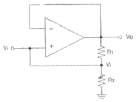
- Vi=V0
- Vi=2V0
- Vi=V0/3
- Vi=3V0
(정답률: 47%)
7. 다음 중 OP-AMP 성능을 판단하는 파라미터로 관련이 없는 것은?
- Vio(입력 오프셋 전압)
- CMRR(동상 신호 제거비)
- IB(입력 바이어스전류)
- PIV(최대 역 전압)
(정답률: 64%)
8. 그림과 같은 회로에 대한 설명 중 옳은 것은?
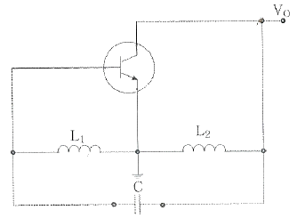
- 콜피츠 발진회로이다.
- VHF대나 UHF대에서 많이 사용된다.
- 부궤환을 적용하였다.
- 하틀리 발진회로이다.
(정답률: 72%)
9. 발진회로의 출력이 직접 부하와 결합되면 부하의 변동으로 인하여 발진주파수가 변동된다. 이에 대한 대책이 아닌 것은?
- 정전압 회로를 사용한다.
- 발진회로와 부하 사이에 완충증폭기를 접속한다.
- 발진회로를 온도가 일정한 곳에 둔다.
- 다음 단과의 결합을 밀 결합으로 한다.
(정답률: 66%)
10. 다음 중 수정발진기에서 발진주파수가 안정된 이유가 아닌 것은?
- 발진 조건을 만족하는 유도성 주파수 범위가 넓다.
- 주위 온도의 영향이 적다.
- 전원이나 부하의 변동에 대하여 안정도가 좋다.
- 수정진동자의 Q가 높다.
(정답률: 32%)
11. FM 변조에서 최대 주파수 편이가 80[kHz]일 때 주파수 변조파의 대역폭은 약 얼마인가?
- 40[kHz]
- 60[kHz]
- 80[kHz]
- 160[kHz]
(정답률: 65%)
12. FM수신기에 사용되는 주파수변별기의 역할은?
- 주파수 변화를 진폭 변화로 바꾸어준다.
- 진폭 변화를 위상 변화로 바꾸어준다.
- 주파수체배를 행한다.
- 최대주파수편이를 증가시킨다.
(정답률: 43%)
13. 주파수변조(FM)에서 변조지수를 나타낸 것 중에 대역폭이 가장 넓은 것은?
- 0.5
- 1
- 1.5
- 2
(정답률: 62%)
14. 다음 중 PM피변조파에 대한 설명으로 옳은 것은?
- 순시위상은 변조신호의 미분값에 비례하고, 순시주파수는 변조신호에 비례한다.
- 순시위상은 변조신호에 비례하고, 순시주파수는 변조신호의 미분값에 비례한다.
- 순시위상은 변조신호의 적분값에 비례하고, 순시주파수는 변조신호에 비례한다.
- 순시위상은 변조신호에 비례하고, 순시주파수는 변조신호의 적분값에 비례한다.
(정답률: 57%)
15. 다음 그림은 이상적인 펄스를 나타낸 것이다 펄스의 듀티 싸이클(Duty Cycle) D의 식으로 옳은 것은?
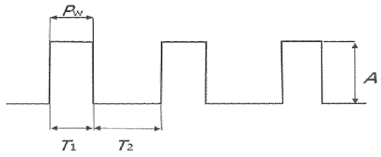
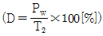
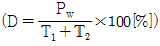
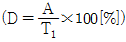
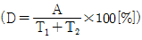
(정답률: 64%)
16. 다음 그림과 같은 클램핑 회로의 출력 파형은?
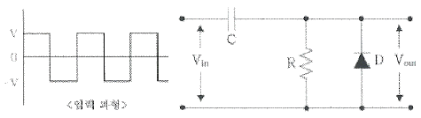
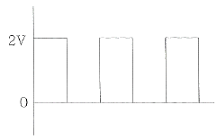
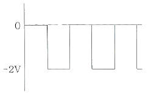
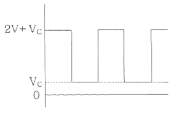
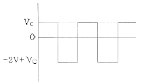
(정답률: 56%)
17. 다음 진리표를 부울 대수식을 표시하면?
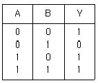
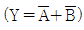
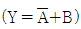
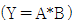
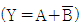
(정답률: 59%)
18. 다음 논리식을 간단히 하면?
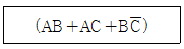
- AB+C
- AC+B
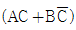
- A
(정답률: 60%)
19. 그림의 코드 변환회로의 명칭은?
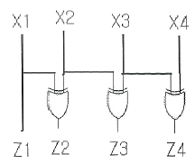
- BCD-GRAY 코드 변환기
- BCD-2421 코드 변환기
- BCD-3초과 코드 변환기
- BCD-9의 보수 변환기
(정답률: 67%)
20. 다음 중 리플 카운터 (Ripple Counter)에 대한 설명으로 틀린 것은?
- 비동기 카운터이다.
- 카운트 속도가 동기식 카운터에 비해 느리다.
- 최대 동작 주파수에 제한을 받지 않는다.
- 회로 구성이 간단하다.
(정답률: 60%)
2과목: 무선통신기기
21. 진폭변조(AM) 송신기에서 5[kW]의 반송파로 60[%] 진폭변조를 하면 하나의 측파대에 포함된 전력은 얼마인가?
- 0.45[kW]
- 0.5[kW]
- 0.9[kW]
- 1.0[kW]
(정답률: 52%)
22. 양극 NRZ(Non-Return to Zero) 디지털 신호를 ASK 변조하면 어떤 변조와 그 결과가 같아지는가?
- DPSK
- FSK
- BPSK
- QPSK
(정답률: 58%)
23. 정현파 신호로 변조된 AM파의 측정시 최대진폭(Vmax)이 20[V]이고 최저진폭(Vmin)이 5[V]일 때 변조도(m)는 얼마인가?
- 0.9
- 0.8
- 0.6
- 0.4
(정답률: 48%)
24. 다음 중 송신기에서 필요한 전력을 안테나에 공급하기 위하여 최종적으로 고주파 전력을 증폭하는 기능으로 적합한 것은?
- 저주파 증폭기
- 여진 전력 증폭부
- 종단 전력 증폭부
- 주파수 체배부
(정답률: 66%)
25. M진 PSK방식에서 반송파의 위상간격이 동일한 경우 위상각의 위상차는?
- π/M
- 2π/M
- 4π/M
- π/2M
(정답률: 46%)
26. 다음 중 GPS 측정오차로 보기 어려운 것은?
- GPS 위성 송신 코드 오류로 인한 오차
- 위성과 수신기간 측정된 거리 오차
- 전리층과 대류권 통과시 전파 지연 오차
- 수신기의 전파적 잡음으로 인한 오차
(정답률: 55%)
27. 다음 중 GMDSS 설비로 406[MHz] 주파수를 사용하는 것은?
- VHF DSC
- NAVTEX
- Inmarsat-C
- COSPAS-SARSAT EPIRB
(정답률: 55%)
28. 다음 중 디지털선택호출장치를 이용한 조난경보 전송에 대한 설명으로 옳지 않은 것은?
- 조난경보의 시작 및 중단이 항상 가능할 것
- 조난경보의 전용 조난버튼을 사용하여야만 송출할수 있을 것
- 조난의 경우에 조난경보를 자동으로 3회 반복하여 송신할 것
- 조난경보를 쉽게 송출할 수 있고, 오조작에 의한 송출을 방지하는 장치가 있을 것
(정답률: 57%)
29. 다음 보기에서 TDMA 방식을 사용하는 위성통신시스템에 대한 설명으로 옳은 내용을 모두 선택한 것은?
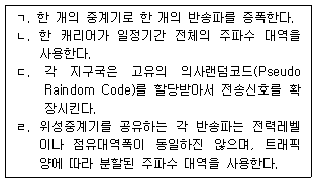
- ㄱ
- ㄱ, ㄴ
- ㄱ, ㄴ, ㄷ
- ㄱ, ㄴ, ㄷ, ㄹ
(정답률: 57%)
30. Innarsat 통신위성과 해안지구국 사이의 링크에 사용되는 주파수 대역은?
- L 밴드
- S 밴드
- C 밴드
- K 밴드
(정답률: 59%)
31. 이동통신에서 서비스지역이 다른 사업자의 무선 네트워크에 접속함으로써 고객이 가입 네트워크 범위를 넘어선 이동을 하여도 통신이 가능하며, 그에 따른 요금의 결제도 가능하도록 하는 서비스를 무엇이라 하는가?
- 소프트 핸드오버
- 주파수 재사용
- 위치등록
- 로밍
(정답률: 70%)
32. 다음 중 이동통신시스템의 이동교환국(Mobile Switching Center;MSC)의 기능에 해당되지 않는 것은?
- 과금처리 기능
- 위치검출 및 등록 기능
- 착·발신 신호 송출 기능
- 이동통신망과 일반전화망의 접속 기능
(정답률: 40%)
33. 무정전 전원장치(Uninterruptible Power Supply; UPS)의 동작원리를 나타내는 다음 [그림]에서 (A)에 들어갈 장치로 적합한 것은?
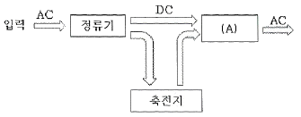
- 필터
- 인버터
- 컨버터
- 스위치
(정답률: 62%)
34. 다음 그림에 대한 설명으로 틀린 것은?
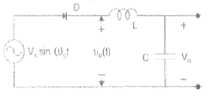
- AC to DC 형태의 컨버터 회로이다.
- 다이오드는 스위치 역할을 한다.
- 저전력의 Battery 충전시스템에 사용된다.
- 다이오드 다음 단의 L과 C는 직류성분을 제거하는 역할을 한다.
(정답률: 50%)
35. 전기적으로 자속을 일으키는 전류의 위상과 토오크를 일으키는 전류의 위상이 직각이 되게 인버터에서 공급하는 전류를 위상제어하는 방식으로 위상을 별도의 센서 없이 자속과 토오크 성분을 제어하는 인버터 방식을 무엇이라 하는가?
- 범용 인버터
- 사이클로 벡터 인버터
- 센서리스 벡터 인버터
- 벡터 인버터
(정답률: 59%)
36. 수정편의 등가 인덕턴스가 3[H], 등가 커패시턴스가 0.02[pF], 등가 저항이 100[Ω]이고 전극판의 정전용량이 5[pF]인 수정 진동자가 있을 때 수정편의 Q는 약 얼마인가?
- 1.225×103
- 1.225×105
- 2.450×103
- 2.450×105
(정답률: 50%)
37. CDMA 시스템에서 의사잡음(PN)부호율을 일정하게 유지하고 데이터 전송율을 2배 증가시킨다면 확산처리이득(Processing Gain)값은?
- 2[dB] 감소한다.
- 2[dB] 증가한다.
- 3[dB] 감소한다.
- 3[dB] 증가한다.
(정답률: 48%)
38. 다음은 NAVTEX 메시지 포맷의 일부를 나타낸 것이다. 밑줄 친 부분의 의미를 바르게 표현한 것은?
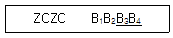
- 해사안전정보
- 메시지 일련번호
- 방송국 식별문자
- 위상동기신호의 종료
(정답률: 55%)
39. 급전선의 임피던스가 78[Ω]인 안테나에 특성 임피던스 50[Ω]인 급전선을 연결 시 반사계수는 얼마인가?
- 0.1
- 0.2
- 0.3
- 0.4
(정답률: 55%)
40. 일반적인 수신기 구성회로 블록다이어그램에서 수신안테나로부터 가장 멀리 떨어져 있는 회로는?
- 입력정합회로
- 전치증폭기
- 대역통과필터
- 검파기
(정답률: 59%)
3과목: 안테나공학
41. 다음 중 전자파 통로에 의한 분류를 설명한 것으로 틀린 것은?
- 전자파 통로는 지상파와 공중파로 크게 나눌 수 있다.
- 지상파에는 직접파, 대지반사파, 지표파, 회절파가 있다.
- 공중파에는 단파와 초단파로 구분된다.
- 전자파의 전파경로는 송·수신소간의 거리, 사용주파수, 통신시기등에 의하여 다르게 된다.
(정답률: 60%)
42. 다음 중 평면파(Plane Wave)에 대한 설명으로 틀린 것은?
- 전자파의 진행 방향에 수직으로 전계, 자계의 성분이 있다.
- 파면 또는 파두(Wave Front)가 평면을 형성하는 전자파이다.
- 전자파가 먼 거리를 진행하면 에너지 밀도가 변화한다.
- 동위상 면이 평면 구조를 구성하고 있는 파이다.
(정답률: 59%)
43. 다음 중 전파에 대한 설명으로 옳지 않은 것은?
- 전파는 종파이다.
- 전파는 편파성을 가진다.
- 전파는 회절성을 가진다.
- 인공적인 유도 없이 공간을 전파하는 3,000[GHz] 이하 주파수의 전자파를 말한다.
(정답률: 66%)
44. 레이다의 안테나로부터 목표물을 향하여 전파를 발사하여 수신하는데 0.1[μs]가 걸렸다면 목표물까지의 거리는 얼마인가?
- 5[m]
- 15[m]
- 25[m]
- 35[m]
(정답률: 64%)
45. 도파관의 여진 방법에 해당하지 않는 것은?
- 정전적 결합에 의한 여진
- 전자적 결합에 의한 여진
- 작은 폐루프 안테나에 의한 여진
- Q변성기에 의한 여진
(정답률: 43%)
46. 동축급전선을 개방하고 임피던스를 측정하였을 때 100[Ω]이고, 단락했을 때의 임피던스가 25[Ω]이라면 이 급전선의 특성임피던스는 얼마인가?
- 100[Ω]
- 75[Ω]
- 50[Ω]
- 25[Ω]
(정답률: 52%)
47. 부하 임피던스가 특성 임피던스의 3배일 때 종단에서의 전압, 전류의 반사계수는 각각 얼마인가?
- 1/2, 1/2
- -1/2, 1/2
- 1/2, -1/2
- -1/2, -1/2
(정답률: 50%)
48. 다음 중 도파관의 특성에 대한 설명으로 틀린 것은?
- 도파관은 차단파장이 있어 고역필터로 작용한다.
- 도파관 내의 파장은 자유공간보다 짧아진다.
- 도파관의 전송모드에는 TEM 모드가 없다.
- 도파관의 군속도는 광속도보다 느리다.
(정답률: 40%)
49. 다음 중 극초단파용 안테나에 대한 설명으로 옳은 것은?
- 혼 리플렉터 안테나는 고이득, 고효율의 저잡음성 안테나이다.
- 파라볼라 안테나는 부엽이 발생하지 않고, 광대역성이다.
- 전자나팔 안테나는 부엽이 비교적 많이 발생한다.
- 혼 안테나에서 절대이득은 파장의 제곱에 비례한다.
(정답률: 54%)
50. 복사전력이 100[W]인 어떤 안테나로부터 최대복사방향 P점의 전계 강도는 500[μV/m]이다. 또 같은 송신점에 복사전력 400[W]인 반파장안테나를 세웠을 때 P점의 전계강도가 100[μV/m]이었다. 피측정안테나의 이득은 약 얼마인가?
- 20[dB]
- 23[dB]
- 30[dB]
- 41[dB]
(정답률: 46%)
51. 다음 중 극초단파용 안테나의 특징이 아닌 것은?
- 크기를 소형화할 수 있다.
- 고이득을 얻을 수 있다.
- 이득은 안테나의 개구면적과 무관하다.
- 고지향성이다.
(정답률: 59%)
52. 길이가 25[m]인 λ/4 수직접지안테나의 고유파장과 고유주파수는 얼마인가? (단, 고유파장 : λ, 고유주파수 : f)
- λ : 50[m], f : 3[MHz]
- λ : 50[m], f : 6[MHz]
- λ : 100[m], f : 3[MHz]
- λ : 100[m], f : 6[MHz]
(정답률: 46%)
53. 전계강도 5[mV/m]인 전파를 실효고 20[m]인 안테나로 수신할 때 유효수신전력이 100[μW]이었다. 이 안테나의 방사저항은?
- 25[Ω]
- 50[Ω]
- 100[Ω]
- 200[Ω]
(정답률: 18%)
54. 다음 중 GMDSS 설비에 속하는 각 무선통신시스템에 사용할 수 있는 안테나로 적합하지 않은 것은?
- VHF DSC - 휩(Whip) 안테나
- MF/HF DSC - 역 L형 안테나
- NAVTEX - 브라운(Braun) 안테나
- F-77타입 인마셋 - 파라볼라 안테나
(정답률: 48%)
55. 다음 중 서울에서 송신된 FM 방송신호가 부산에서 어떤 시간 동안에만 일시적으로 수신되었다면 어떤 경로의 전파일 가능성이 제일 높은가?
- 라디오 덕트(Radio Duct) 전파
- 전리층 반사파
- 자기폭풍 전파
- 산악회절이득 전파
(정답률: 57%)
56. 다음 중 직진성이 가장 강한 주파수대는?
- VHF
- HF
- SHF
- UHF
(정답률: 60%)
57. E층의 임계주파수 f0=5[MHz]이고, E층의 높이는 100[km]이다. 이 경우 주파수 10[MHz] 전파의 전리층 반사파가 지상에 도달할 때 송신점(A)과 수신점(B) 사이의 거리는 약 얼마인가? (단, 대지는 평면으로 가정한다.)
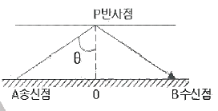
- 146[km]
- 246[km]
- 346[km]
- 446[km]
(정답률: 59%)
58. 다음 중 전리층에서 일어나는 감쇠 중 제2종 감쇠의 특징으로 옳은 것은?
- 파장과 관계없다.
- 파장이 길수록 크다.
- 전파가 들어간 전리층의 깊이와는 무관하다.
- 주파수가 높을수록 심하다.
(정답률: 43%)
59. 다음 중 대기의 굴절률을 결정하는 요소는?
- 도전율
- 대기층
- 유전율
- 주파수
(정답률: 52%)
60. 전파가 대기 중에서 비, 구름, 안개 등에 의한 흡수 및 산란현상이 발생하여 수신전계가 변하는 현상은?
- 감쇠형 페이딩
- K형 페이딩
- 신틸레이션 페이딩
- 산란성 페이딩
(정답률: 57%)
4과목: 통신영어 및 교통지리
61. Which monetary unit is used in the composition of accounting rates for international telecommunication services?
- the U. S. Dollra
- the Found
- the EUR
- the gold franc
(정답률: 56%)
62. Choose the best definition of certain terms which would be appropriate in the following sentence.
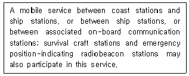
- maritime service
- maritime mobile service
- coastal mobile service
- oceanic mobile service
(정답률: 62%)
63. 다음 중 국제전기통신연합의 업무규칙 중 “세계전파통신회의”를 줄여서 어떻게 표현하는가?
- RR
- SG
- WRC
- RRB
(정답률: 68%)
64. Which is not the instrument of the Union?
- International Telecommunication Regulations.
- Radio Regulations
- Radio Provisions
- Convention of the ITU
(정답률: 57%)
65. Fill in the blank with suitable one.
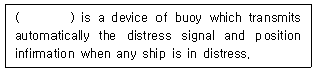
- EPIRB
- SCIS
- SOLAS
- DOBAS
(정답률: 67%)
66. Choose the wrong translation of those underlined parts of the follwing sentence.
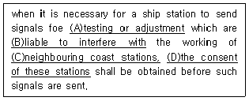
- A : 시험 또는 전송
- B : 간섭을 야기하기 쉬운
- C : 부근에 있는 해안국
- D : 해안국의 동의
(정답률: 57%)
67. Choose the correct Korean version for the underlined parts.
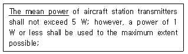
- 첨두 전력
- 반송파 전력
- 규격 전력
- 평균 전력
(정답률: 61%)
68. Select the right one in the blank.
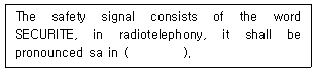
- English
- Italian
- French
- Spanish
(정답률: 64%)
69. Choose the wrong one to be emphasized in follwing phonetic alphabets.
- Q---KEH BECK
- R---ROW ME OH
- O---OSS CAH
- H---HOH TELL
(정답률: 66%)
70. Read the follwing massage and choose the wrong meaning for the underlined parts.
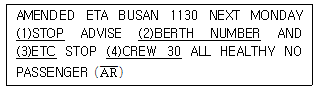
- (1)은 “punctuation mark"를 뜻한다.
- (2)는 “입항순서”를 뜻한다.
- (3)은 “Estimated Time of completion"으로 작업완료 예정시간으로 통용된다.
- (4)는 “30명의 승조원”을 뜻한다.
(정답률: 57%)
71. 다음 문장의 의미로 옳은 것은?
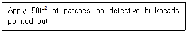
- 요청한 대로 손상된 선수에 50ft2의 동판을 덧붙일 것
- 표시된 대로 손상된 격벽에 50ft2의 철판을 덧붙일 것
- 표시된 대로 구멍난 격벽에 50ft2의 철판을 용접할 것
- 요청한 대로 손상된 선미에 50ft2의 철판을 용접할 것
(정답률: 58%)
72. 다음 문장의 괄호 안에 들어갈 적절한 단어는?
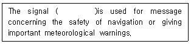
- MAYDAY
- PAN PAN
- SECURITE
- EMERGENCY
(정답률: 59%)
73. Choose the wrong translation for the following sentence.
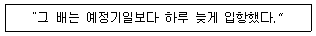
- The ship entered port one day early in arriving.
- The ship entered port one day behind the schedule.
- The ship entered port later than the expected time by one day.
- The ship entered port one day later than the scheduled time.
(정답률: 61%)
74. 한국, 일본, 중국, 홍콩 등의 아시아 각국과 캐나다, 미국을 연결하는 항로를 무엇이라 부르는가?
- 북태평양 항로
- 남태평양 항로
- 북대서양 항로
- 인도양 항로
(정답률: 76%)
75. 다음 중 Malaya 반도와 Sumatra섬 사이에 있는 해협은?
- Sunda Strait
- Makasar Strait
- Malacca Strait
- Molucca Strait
(정답률: 67%)
76. 다음 중 태평양 연안에 위치하지 않는 도시는?
- Honolulu
- Seattle
- San Francisco
- Galveston
(정답률: 68%)
77. Corinth Canal은 다음 중 어느 국가에 소속인가?
- Greece
- Belgium
- Germany
- Sweden
(정답률: 60%)
78. 중위도에서 성층권에 이르는 우세한 고기압이 장기간 정체하여 서쪽의 저기압 진행을 막아 그 저기압의 진로를 변화시키는 현상은?
- Adjusting
- Blocking
- Path
- Turning
(정답률: 62%)
79. 다음 중 찬 공기 덩어리와 더운 공기 덩어리가 마주칠 때 그 세력이 비슷하여 움직이지 않고 한 곳에 오랫동안 머물러 있는 전선(Front)은?
- 한냉전선
- 온난전선
- 정체전선
- 폐색전선
(정답률: 77%)
80. 다음 중 열대성 저기압에 대한 설명으로 틀린 것은?
- 중심에서 반경 약 30[km]의 눈을 가진다.
- 강한 폭풍우와 한냉전선을 동반한다.
- TYPHOON, HURRICANE, CYCLONE, WILLY-WILLY 등이 있다.
- 중심을 향하여 반시계 방향의 타원형으로 불어 들어가는 풍향의 강한 바람을 동반한다.
(정답률: 74%)
5과목: 전파관계법규
81. 의무선박국에 설치된 디지털선택호출장치 등의 기능 확인은?
- 그 선박의 항행 후 매주 1회 이상 그 기능을 확인하여야 한다.
- 1년 이내의 기간마다 그 기능을 확인하여야 한다.
- 그 선박의 항행 중 매일 1회 이상 그 기능을 확인하여야 한다.
- 그 선박의 항행 중 매월 1회 이상 그 기능을 확인하여야 한다.
(정답률: 70%)
82. 조난통신이 종료한 때 또는 완전한 침묵을 지키게 할 필요가 없게 된 때 조난통신을 관장하는 무선국이 무선전화로 사용하는 용어는?
- SEELONCE FEENEE
- MAYDAY FEENEE
- DISTRESS FEENEE
- SILENCE PANPAN
(정답률: 60%)
83. 중파방송을 행하는 방송국의 송신안테나의 설치장소 개설 조건으로 적합한 것은?
- 송신안테나의 위치는 안테나공급전력이 100와트를 초과하여 1킬로와트까지인 경우 과학기술정보통신부장관이 지정하는 지점에서 최소한 1킬로미터 떨어져야한다.
- 송신안테나의 위치는 안테나공급전력이 1킬로와트를 초과하여 5킬로와트까지인 경우 과학기술정보통신부장관이 지정하는 지점에서 최소한 2킬로미터 떨어져야한다.
- 송신안테나의 위치는 안테나공급전력이 5킬로와트를 초과하여 20킬로와트까지인 경우 과학기술정보통신부장관이 지정하는 지점에서 최소한 3킬로미터 떨어져야한다.
- 송신안테나의 위치는 안테나공급전력이 20킬로와트를 초과하여 50킬로와트까지인 경우 과학기술정보통신부장관이 지정하는 지점에서 최소한 4킬로미터 떨어져야한다.
(정답률: 63%)
84. 다음 중 해상이동업무에 있어서 통신의 우선순위가 가장 높은 것은?
- 안전통신
- 조난통신
- 긴급통신
- 비상통신
(정답률: 68%)
85. 총톤수 40톤 미만인 어선(의무선박국)의 정기검사 유효기간은 몇 년인가?
- 1년
- 2년
- 3년
- 5년
(정답률: 53%)
86. 과학기술정보통신부장관은 주파수할당을 하고자 할 때에 공고하여야 하며, 그 공고는 주파수할당을 하는 날부터 몇 월 전까지 하여야 하는가?
- 1월
- 2월
- 3월
- 6월
(정답률: 44%)
87. 다음 중 수신설비가 갖추어야 할 구비조건에 해당하지 않는 것은?
- 감도가 양호할 것
- 내부잡음이 적을 것
- 선택도가 클 것
- 출력이 충분할 것
(정답률: 66%)
88. 다음 중 적합인증서 교부 후 관보에 고시해야 ? 사항이 아닌 것은?
- 가자재의 명칭·모델명
- 제조자
- 인증연월일
- 인증받은 자의 주소
(정답률: 76%)
89. 다음 중 A3E 방송국 설비의 안테나공급전력은 무엇으로 표시하는가?
- 첨주포락선전력(PX)
- 반송파전력(PZ)
- 평균전력(PY)
- 입력전력(PI)
(정답률: 52%)
90. 다음 중 전파법의 목적으로 가장 적합한 것은?
- 주파수분배의 변경
- 주파수회수 또는 주파수 재배치
- 전파 관련분야의 진흥과 공공복리의 증진에 이바지
- 전파이용질서의 확립
(정답률: 64%)
91. 다음 중 무선통신의 원칙으로 적합하지 않은 것은?
- 무선통신을 하는 때에는 정확하게 송신하여야 한다.
- 무선통신에 사용하는 용어는 가능한 한 세밀하여야 한다.
- 무선통신의 내용은 필요 최소한의 사항으로 이루어져야 한다.
- 무선통신에서 오류를 인지하였을 때에는 즉시 정정하여야 한다.
(정답률: 63%)
92. 다음 중 무선국의 준공검사의 면제 또는 생략이 가능한 무선국이 아닌 것은?
- 어선에 설치하는 무선국으로서 대통령령으로 정하는 무선국
- 소규모의 무선국 및 아마추어국으로서 대통령으로 정하는 무선국
- 소출력 방송국
- 외국에서 취득한 후 국내의 목적지에 도착하지 못한 선박의 무선국
(정답률: 60%)
93. 다음 중 국제전기통신연합의 법률문서가 아닌 것은?
- 국제전기통신연합 헌장(CS)
- 국제전기통신연합 협약(CV)
- STCW 협약
- 업무규칙(AR)
(정답률: 64%)
94. 다음 중 1974년 해상 인명안전협약(SOLAS) 관련 1988년 의정서에 따른 해역의 구분으로 옳지 않은 것은?
- “A1해역”이란 당사국 정부에 의하여 규정될 수 있는 것으로 계속적인 DSC 경보를 이용할 수 있는 최소한 하나의 VHF 해안국의 무선전화 통신 범위 내의 해역을 말한다.
- “A2해역”이란 당사국 정부에 의하여 규정될 수 있는 것으로 계속적인 DSC 경보를 이용할 수 있는 최소한 하나의 MF 해안국의 무선전화 통신 범위 내에서 A1 해역을 제외한 해역을 말한다.
- “A3해역”이란 계속적인 경보를 이용할 숭 있는 INMARSAT 정지궤도 위성의 통신 범위 내에서 A1 및 A2 해역을 제외한 해역을 말한다.
- “A4해역”이란 A1, A2 및 A3 해역 전체를 종합하여 말한다.
(정답률: 63%)
95. 다음 중 국제전기통신연합의 헌장과 협약 또는 업무규칙에 불일치가 있는 경우 우선하는 것은?
- 헌장이 우선한다.
- 협약이 우선한다.
- 헌장과 협약이 우선한다.
- 업무규칙이 우선한다.
(정답률: 69%)
96. 다음 중 국제전기통신연합 헌장의 목적으로 거리가 먼 것은?
- 전기통신의 개선과 그 합리적 이용을 위한 국제협력을 증진한다.
- 전기통신 시설의 발달과 그 운용의 능률화를 기한다.
- 전기통신 사업의 경제적 운영에 역점을 둔다.
- ITU 가맹국의 공동목적 달성을 위한 각국 행위를 조화한다.
(정답률: 66%)
97. 다음 중 통신 보안을 강화하여야 하는 중요도 순으로 나열한 것은?
- Ⅰ급 비밀＞Ⅱ급 비밀＞Ⅲ급 비밀＞대외비
- Ⅲ급 비밀＞Ⅱ급 비밀＞Ⅰ급 비밀＞대외비
- 대외비＞Ⅰ급 비밀＞Ⅱ급 비밀＞Ⅲ급 비밀
- 대외비＞Ⅲ급 비밀＞Ⅱ급 비밀＞Ⅰ급 비밀
(정답률: 75%)
98. “정보통신수단으로 수집·처리·가공·저장·검색·송수신 되는 정보의 유출·위조·변조·훼손 등을 방지하거나 정보통신망을 보호하기 위하여 관리적·물리적·기술적 수단을 강구하는 일체의 행위”를 나타내는 말은?
- 암호 보안
- 정보 보안
- 음어 보안
- 문서 보안
(정답률: 70%)
99. 다음 중 통신보안의 비밀누설에 대한 주요 원인이 아닌 것은?
- 비밀이나 중요 내용을 평문으로 송신
- 통신제원의 노출
- 통신망 신설, 증설시 보안측정의 의무화
- 통신 업무량의 과다로 통신내용의 검토 소홀
(정답률: 43%)
100. 다음 중 전파법령에서 정하고 있는 통신보안의 준수에 관한 사항이 아닌 것은?
- 통신보안책임자의 지정에 관한 사항
- 무선국 허가시 통신보안 조치에 관한 사항
- 비인가 보안자재 사용 권장에 관한 사항
- 무선종사자에 대한 통신보안 교육 이수에 관한 사항
(정답률: 72%)